一起吃：食物分享平台
「一起吃」是一個希望以食物分享來解決都市中剩食問題的服務設計專案。此專案為團隊作業，我在團隊裡負責的有前期資料蒐集與分析、訪談、整理服務藍圖與顧客旅程，以及APP和機台的介面流程。
設計概念
「一起吃」是一個包括了行動裝置APP和實際櫃體的食物分享平台；是為了減少食物的浪費，以及加強人與人之間的連結而設立。
在台灣，一年被浪費的食物有275萬公噸，我們希望人們透過這個平台，將自己所不需要的、但依然可以被食用的食材分享出去，而透過此平台得到食物的人，也能將這份心意繼續傳達下去。
一、使用者研究
現有問題分析
A. 家中
1. 冰箱、儲藏櫃空間不足
2. 食材放在冰箱過期發臭
3. 廚餘發臭、引來蚊蟲
B. 廚餘
1. 生/熟廚餘需分開，但成效不彰
2. 運送廚餘成本高，但燃燒破壞環境
3. 一般家庭單日廚餘少，常與垃圾一起丟
C. 超市
1. 較少小包裝的東西，就算有也較貴
2. 即期食品較便宜
目標族群定義
1. 居住在都市
2. 家庭成員數少，可能一或二人住
3. 工作忙碌且疲憊，需要心靈寄託
4. 所需食物份量少而難以購買
訪談結果
我們訪談了4位受訪者，了解他們的作息、內食頻率、食材採買/處理的習慣、與家中人員及社區鄰居的關係。
- 購買份量問題：香料、加工食品等少有一人份的小包裝，一餐分量的食材也難以購得；希望能取得少量多樣的食材。
- 料理時間問題：由於能花在煮飯的時間不多，希望能有快速處理好的食材，或是更快煮好食物的方法。
- 信任度問題：平時會去有信任感的店家消費，也會較願意與有信任感的人互動或是交換食物。希望有安全可靠的食物來源。
- 食材存放問題：希望能控管食物保存期限方法，或是提醒食物即將到期的機制，以減少食物和金錢的浪費。
- 廚餘處理問題：不希望製造出太多廚餘，也覺得應該有更佳的廚餘處理方式，以減少家庭垃圾。
Point of view
| Who | Need | Why |
|---|---|---|
| 想吃得均衡又多樣的小資女 | 料理出更多種不同的菜色 | 因為超市食材種類與份量的限制，而常得做出妥協 |
| 生活費不太多的忙碌學生 | 簡單且便宜可取得多元食物的方法 | 想省錢省力，不想多花時間在上面 |
二、分析
價值主張
根據訪談結果和情境分析，我們設定了此項服務的價值主張「以食物分享來解決都市中的剩食問題」；讓使用者透過網路平台和左鄰右舍交換多餘的食物。此項服務將透過網路平台（手機APP）媒合有多餘剩食的人和想要領取的人，讓他們在公共場合（位於超市的公共管理冰箱）進行交換，並透過評價機制提升信任度。
三、服務流程
顧客旅程
| Giver | Receiver |
|---|---|
|
1. 收到一箱親戚種的馬鈴薯 「雖然很感謝，但這麼多根本吃不完，好浪費啊」
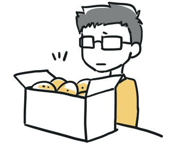
|
1. 週末想煮咖哩給女朋友吃，但發現冰箱裡沒有馬鈴薯跟洋蔥 「我只需要兩人份的馬鈴薯跟洋蔥欸~可是每次一買就一堆吃不完很麻煩。」 
|
|
2. 至「我要給」頁 面登錄提供食材資訊、為食材拍照、登錄可送達櫃點 「或許有人可以幫我分擔一些馬鈴薯～」
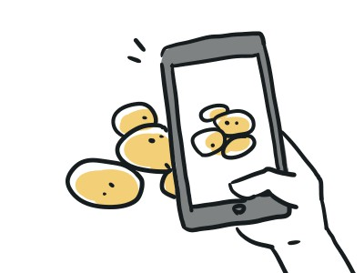
|
2. 打開「一起吃」搜尋供給市場中有無所需物品 「來逛逛市場好了」
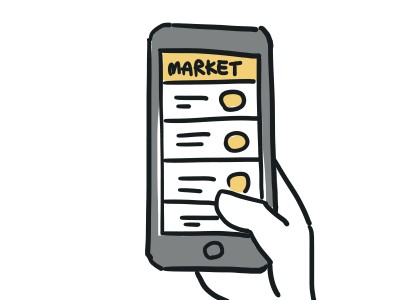
|
|
3. 收到訊息有人想要兩顆 「太好了，可以分出去兩個！」
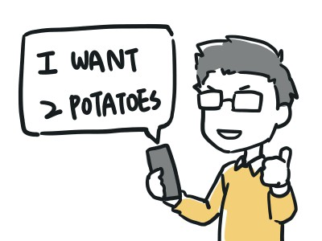
|
3. 發現八顆馬鈴薯，提出只想要兩顆的請求 「喔喔！是馬鈴薯欸，傳訊息請他分我兩顆吧。」
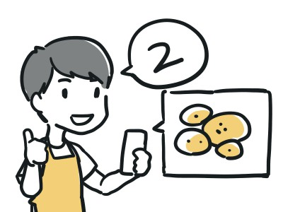
|
|
4. 與對方約定好禮拜五晚上前放入文山二分享站的櫃子，並收到櫃號 「等下去超市順便拿去剛剛好。」
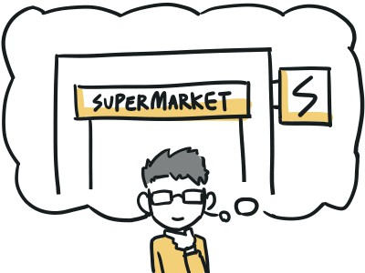
|
4. 與對方約定好禮拜五晚上前放入文山二分享站的櫃子，並收到櫃號 「禮拜五下班順便去超市的分享站拿剛剛好。」
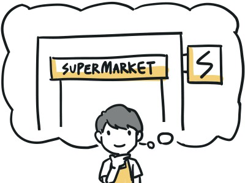
|
|
5. 決定來煮咖哩，但沒有洋蔥，決定去超市買 「超市賣的洋蔥好大一包，會不會吃不完呢…」
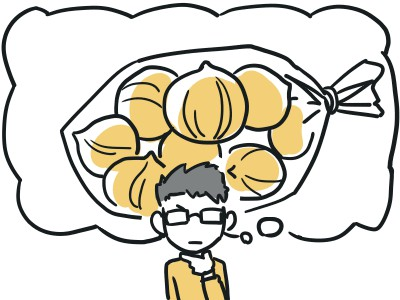
|
5. 找不到洋蔥 「再來找找看有沒有洋蔥…都沒有欸。」
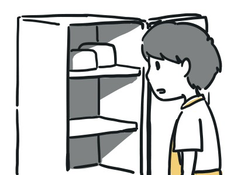
|
|
6. 出門前看到有人需要洋蔥，所以可以買大包的了 「這樣就不用擔心洋蔥吃不完了」 |
6. 至「我要拿」頁面登錄需求，設定食品標籤，並輸入此需求截止日期至週五晚上 「不然我來登錄個需求好了，禮拜五晚上去超市的分享站前搞不好就有人認領了，反正沒有的話到時候還可以買。」
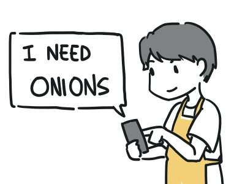
|
|
7. 按下「我要認領」 「這個好像是剛剛跟我要馬鈴薯的那個人耶，難不成他也要煮咖哩嗎？」 |
7. 收到有人認領的訊息 「喔耶！…欸？這好像是剛剛要給我馬鈴薯的同一個人欸，來看看他的個人檔案好了…最常交換的食材是馬鈴薯？難不成他家種馬鈴薯嗎…？」
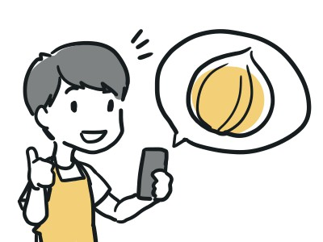
|
|
8. 與對方約好禮拜五晚上前放入文山二分享站的櫃子，並收到櫃號 「就放同一個分享站吧，免得麻煩～」
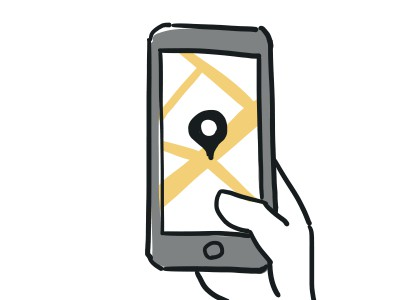
|
8. 與對方約定好禮拜五晚上前放入文山二分享站的櫃子，並收到櫃號 「那就一樣禮拜五晚上文山二吧。」 
|
|
9. 去超市買洋蔥，滿額得到額外代幣；順便把馬鈴薯洋蔥帶去文山二分享站 「得到代幣了」
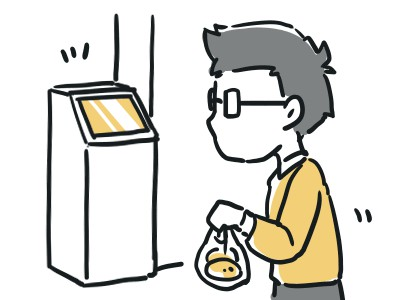
|
9. 滿心期待地等待馬鈴薯和洋蔥 「不知道煮起來味道如何呢？」
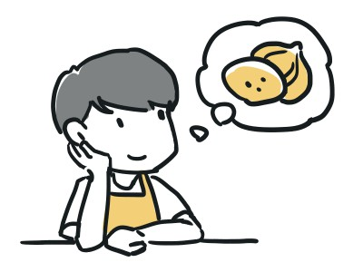
|
|
10. 用分享站的話筒留言給對方，拉霸得到超市折價券 「分享出食物還可以得到超市折價券，真是太棒啦！」 |
10. 收到馬鈴薯與洋蔥已送達分享站的訊息與對方的語音留言 「今天下班要去拿馬鈴薯跟洋蔥呢～啊！是訊息！他說什麼呢？…喔～原來是他親戚是種有機馬鈴薯的啊！」
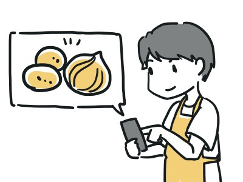
|
|
11. 收到來自對方的代幣 「喔～又增加了一個代幣」 |
11. 下班時順便至文山二分享站將馬鈴薯與洋蔥提領出來，在分享站的機器拉霸，但沒抽到超市折價券 「嗯～馬鈴薯跟洋蔥都看起來很有元氣呢！…登出前來拉個霸吧…啊！差一點！可惡。」
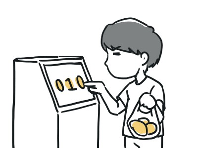
|
|
12. 煮咖哩來吃，發現親戚種的馬鈴薯超好吃 「真不愧是我大伯的鄰居的表姊的有機馬鈴薯啊！」
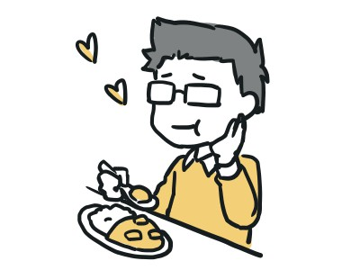
|
12. 與女朋友共進自己煮的咖哩，發現馬鈴薯超好吃，傳訊告訴分享者「馬鈴薯超好吃！」 「天啊！神之馬鈴薯！怎麼會這麼好吃啊！我要崇拜給我馬鈴薯的人！來傳訊息跟他分享我的感動…」
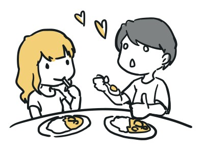
|
|
13. 收到對方的評等五顆星與「馬鈴薯超好吃！」的留言 「剛剛那個人傳訊息跟我說他也覺得馬鈴薯超好吃，真是太好了！」
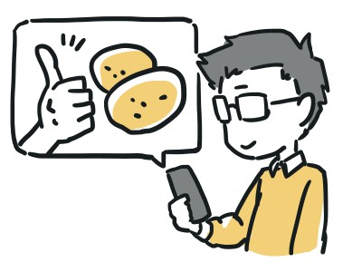
|
13. 至「一起吃」應用程式的歷史交易記錄中，選擇馬鈴薯分享者，評等五顆星 「我要把他加入我的最愛，還要給他五顆星！」 |
Functional Map
{kind=link}
{kind=link}
{kind=link}
{kind=link}
四、介面設計
UI Flow
{kind=link}
點擊圖片放大
介面設計：手機APP
市場頁面
每成功給出一次食物就能得到一個來自對方的蘋果幣，需要有蘋果幣才能拿取食物
食物徵求頁面
市場找不到的食物，可以新增需求
食物分享上傳
上傳欲分享的食物資訊及照片；須當場拍攝食物照片上傳以提升信任度
食物分享交易
交易流程、評價及留言
我的家
可查看個人資料、交易紀錄等
介面設計：實體交易櫃點
實體接觸點
設置於超市旁或是社區中較易到達處
登入頁面
選擇要放置或拿取食物
給出食物
使用機台上的話筒錄製留言後，將食物放入指定的櫃子裡
拿取食物
可收聽給予人的語音訊息，並拿取食物；交易完成後可參加抽獎，獲得超市折價券

五、商業模式
服務藍圖
Business Model